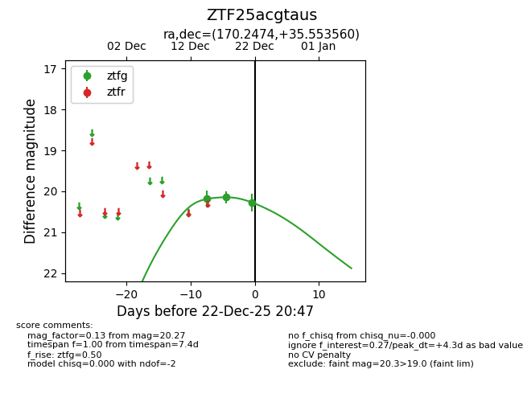
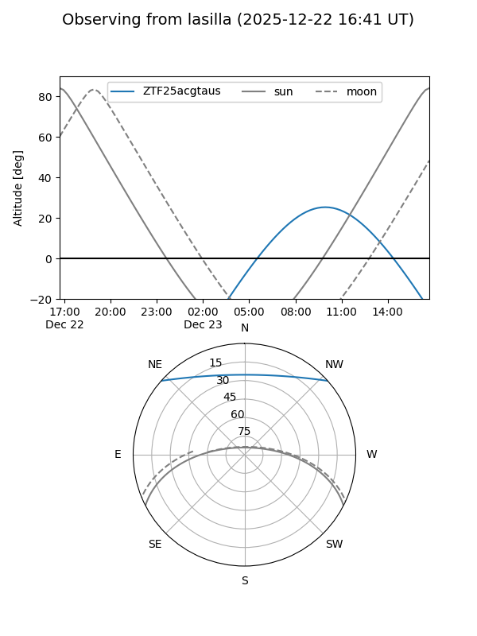
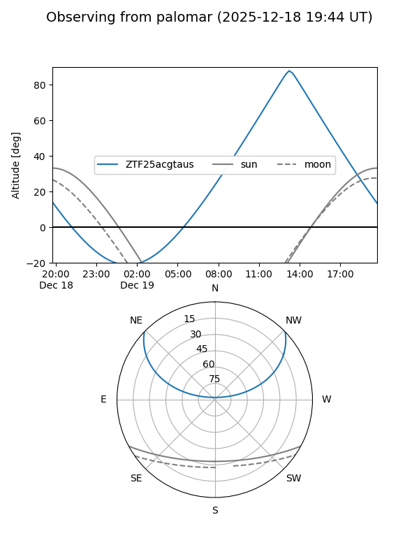

ZTF25acgtaus
Target ZTF25acgtaus at 2025-12-22 20:48
Aliases and brokers:
FINK: fink-portal.org/ZTF25acgtaus
Lasair: lasair-ztf.lsst.ac.uk/objects/ZTF25acgtaus
ALeRCE: alerce.online/object/ZTF25acgtaus
alt names
ZTF25acgtaus (ztf,fink_ztf)
Coordinates:
equatorial (ra, dec) = 170.2474,+35.55356
equatorial (HMS+DMS) = 11:20:59.37,+35:33:12.82
galactic (l, b) = (183.7022,+68.99478)
Flags:
Photometry:
last ztfg=20.27
3 ztfg detections
Lightcurve

Visibility


Additional plots